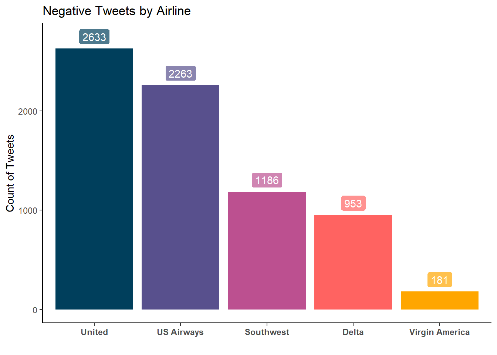
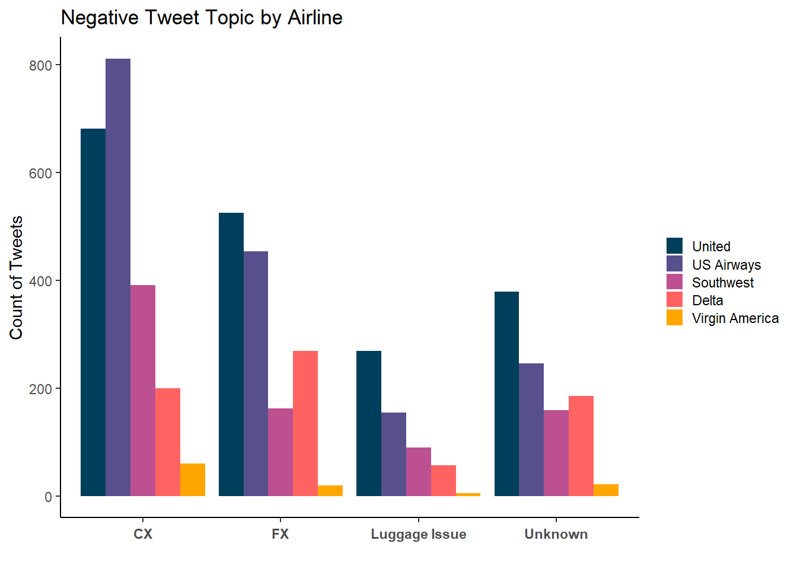

Code
library(DBI)
library(RPostgres)
library(tidyverse)
library(tidytext)
library(strainerr)Bradford Johnson
October 1, 2022
Using SQL to query a database then visualizing insights in R.
colors_df <-c("#003f5c","#58508d","#bc5090","#ff6361","#ffa600")
p1 <- airline_df %>%
mutate(n_tweets = as.numeric(n_tweets),
airline = factor(airline, levels = c("United",
"US Airways",
"Southwest",
"Delta",
"Virgin America"))) %>%
ggplot(aes(x=airline, y=n_tweets, fill=colors_df, label=n_tweets)) +
geom_col() +
geom_label(colour="white",nudge_y = 120, alpha = .7)
p1 <- titlr(p1, "Negative Tweets by Airline", "", "Count of Tweets")
p1 <- p1 + scale_fill_manual(values = colors_df) + theme_classic()
p1 <- p1 + theme(legend.position = "", axis.text.x = element_text(face = "bold"))
p1
res <- dbSendQuery(con, "
-- Breakdown by airline and reason
SELECT airline, negativereason, COUNT(negativereason) as n_tweets
FROM codedtweets
GROUP BY airline, negativereason
HAVING(COUNT(negativereason)) > 0
ORDER BY airline ASC, n_tweets DESC;
")
airline_reason_df <- dbFetch(res)
dbClearResult(res)p2 <- airline_reason_df %>%
mutate(n_tweets = as.numeric(n_tweets),
airline = factor(airline, levels = c("United",
"US Airways",
"Southwest",
"Delta",
"Virgin America")),
negativereason = case_when(negativereason == "Customer Service Issue" ~ "CX",
negativereason == "Can\'t Tell" ~ "Unknown",
negativereason == "Bad Flight" ~ "FX",
negativereason == "Flight Attendant Complaints" ~ "FX",
negativereason == "Cancelled Flight" ~ "FX",
negativereason == "Flight Booking Problems" ~ "CX",
negativereason == "longlines" ~ "CX",
negativereason == "Late Flight" ~ "FX",
negativereason == "Lost Luggage" ~ "Luggage Issue",
negativereason == "Damaged Luggage" ~ "Luggage Issue")) %>%
ggplot(aes(x=negativereason, y=n_tweets, fill=airline, label=n_tweets)) +
geom_col(position = "dodge")
p2 <- titlr(p2, "Negative Tweet Topic by Airline", "", "Count of Tweets")
p2 <- p2 + scale_fill_manual(values=colors_df) + theme_classic()
p2 <- p2 + theme(legend.position = "right", legend.box.spacing = unit(.4,"cm") ,legend.title = element_blank(),legend.key.size = unit(.4,"cm"), axis.text.x = element_text(angle = 0, vjust = .4, face = "bold"))
p2 
CX = Customer Experience
FX = Flight Experience